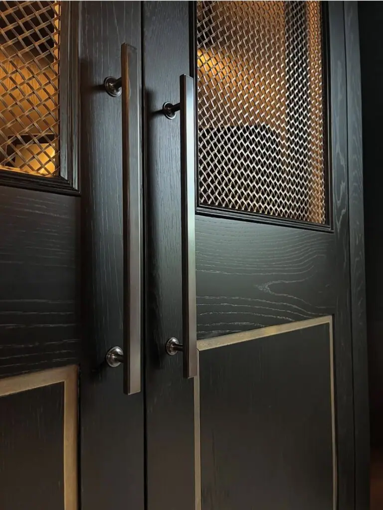
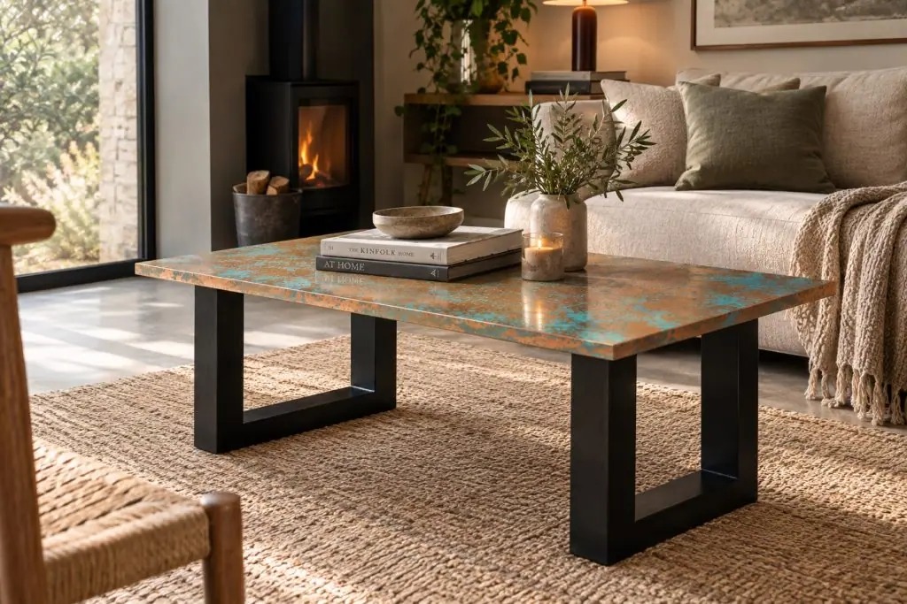

Halman Thompson in the press
Halman Thompson is an artisan metal creator based in the North East, specialising in crafting bespoke products out of distressed, aged or brushed brass and copper.
We have been involved in a range of projects, including the design and manufacturing of tables used in the 2021 G7 Summit in Cornwall and a bar top for the newly renovated Duchy of Cornwall Nursery.
Our brand and products have been featured in various publications, from industry features to design highlights in interior and property magazines, news outlets and more.
Featured in
- Luxe Magazine Business partners Sara Halman and Josh Thompson talk about the brand and inspirations behind their bespoke metal creations in an interview with Luxe magazine. Learn More
- Livingetc Owner Sara Halman gives insight into the hygienic and practical qualities of brass and copper materials as part of an expert-led discussion on the best countertops for cooking. Learn More
- Mad About The House Property and interiors writer Kate Watson-Smyth showcases our aged copper worktop as part of a big house reveal on her award-winning blog, which also appeared in the 25th anniversary issue of Red magazine. Learn More
- House & Garden Our Berkshire Bronzed Brass is listed as part of a mid-century retro kitchen look by Henri Fitzwilliam-Lay in House & Garden’s top kitchen scheme ideas. Learn More
- Daily Mail Our patina-rich copper worktop is highlighted as a statement kitchen feature that transforms a narrow terraced house into a cosy family home. Learn More
- Hexham Courant Prince William unveils Halman Thompson as the designer of the handcrafted copper bar top and plinths for the refurbishment of the Duchy of Cornwall’s Nursery restaurant and bar, officially opened by Queen Camilla in May 2023. Learn More
- These Three Rooms Halman Thompson created an eye-catching copper splashback feature in the kitchen of TV and radio presenter Zoe Hardman. Learn More
- Livingetc Featured again in Livingetc, Sara discusses the latest copper trend in interior decor, and tips for how to showcase copper in your home. Learn More


Interview the experts
Sara Halman and Josh Thompson, joint business partners of Halman Thompson, are experts in the field and can arrange interviews for press distribution.
Ideal for features in home interiors, kitchen and bathroom styles, bar and restaurant design, architecture, landscape and gardening.
Get in touch
Contact Halman Thompson to discuss press coverage, media and interviews for print and digital publications.


If you can dream it, we’ll make it.
Bars, balustrades, staircases, worktops, cladding and pieces that don’t have a name yet. Our designers and craftspeople work in brass, copper, zinc and steel, and alongside wood.